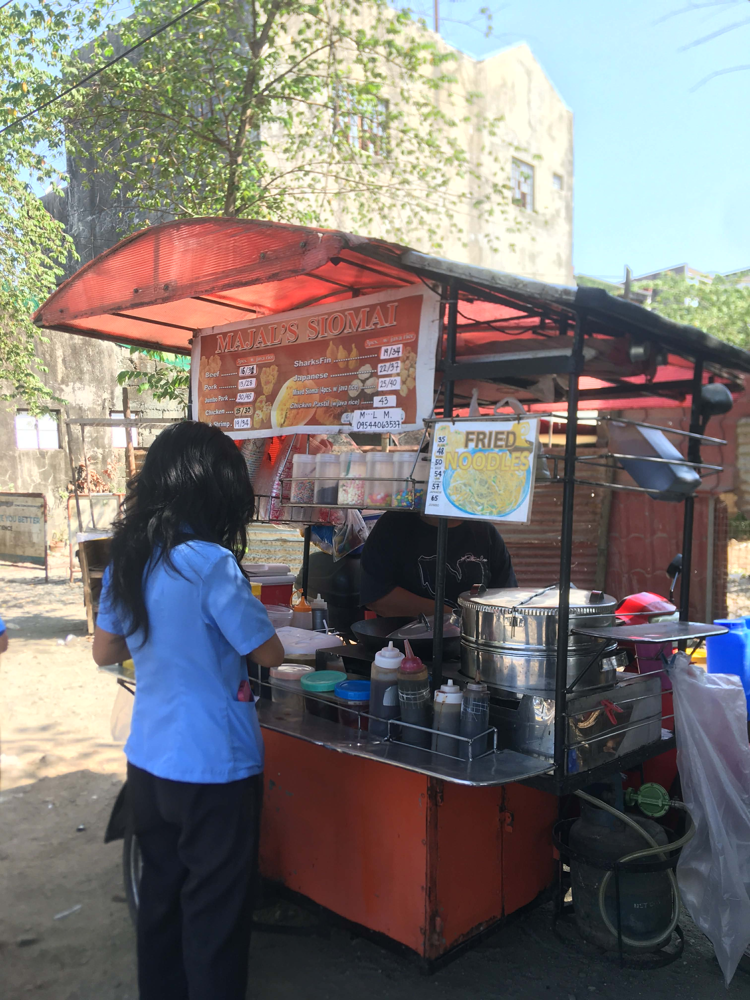
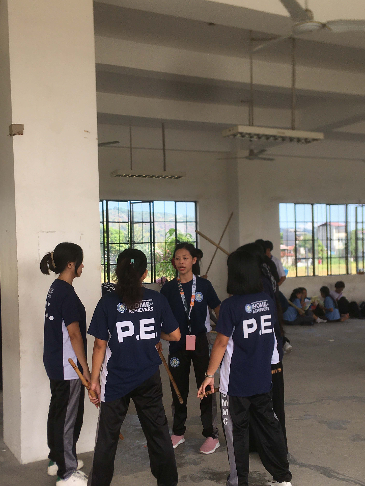
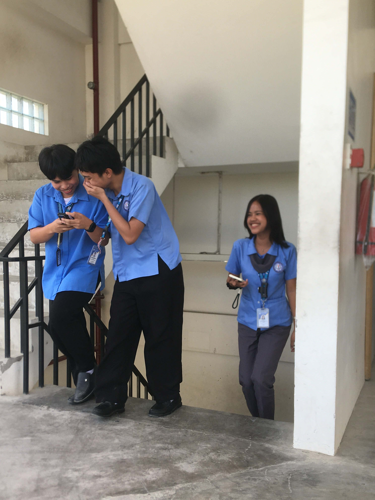
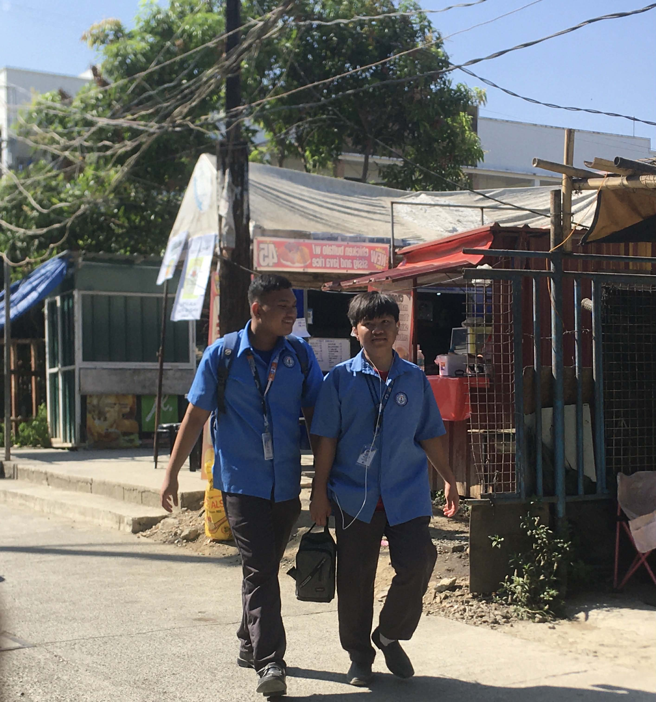

1. What story does your photo tell?
One day, a student bought siomai at a food court. She frequently purchased from there. because the food was delicious. However, she often noticed that the vendor would stare at her, even though she was just passing by the food court. She told her friends about it, but they just said that maybe the vendor was just looking around. Still, the student couldn't feel at ease. So, she decided to buy food again and asked the vendor why he kept looking at her, even when she only passed by. The student feit uncomfortable because she thought maybe the vendor was upset or had bad intentions if she bought from someone else. The vendor just laughed at her concerns, thinking of something.
He calmly explained that the reason he kept staring was because, the last time she bought from him, she forgot to pay. He was looking at her because he was trying to remember if she had paid for her previous order. When the student heard this, they both just laughed, and she paid for his previous order.
2. Why did you chose this subject?
I chose this photo because of the meaning behind it. In the picture, we can see two individual interacting, the other is trying to make a living for her family while the other is trying to buy food, it could be for herself, her classmate or perhaps, her friend.
3. What elements such as lighting, composition, timing, & emotions make your photo effective?
Composition: The woman in blue draws the eye to the food cart, leading the viewer through the scene. Lighting: The bright sunlight highlights the cart and the menu, making the details easy to see. Moment: It captures an everyday, relatable street food scene. Mood: It creates a feel of local culture and life.4. What challenges did you encounter while taking the photo?
There are three challenges I encountered during the photo taking. First, the pressure from the people around me, I might get confronted by the person I have taken a picture of and get judged by the people around me. Second, the crowd makes the picture harder to capture. Lastly, the lighting of the picture became harder to control because my phone couldn't maintain the lighting I desired.
5. How can you improve your shot next time?
My shot can significantly improve by moving closer to show the food more clearly and details of the vendor's activity. I will also avoid bright sunlight because it creates harsh shadows and can wash out colors. I will try morning or late afternoon light for a softer look next time. Waiting for an expression, a smile, or interaction between the vendor and customer would add more emotion to the photo. Lastly, I will simplify the background to ensure the buildings behind aren't distracting.
The College Life

The Real One

The Last Bond
